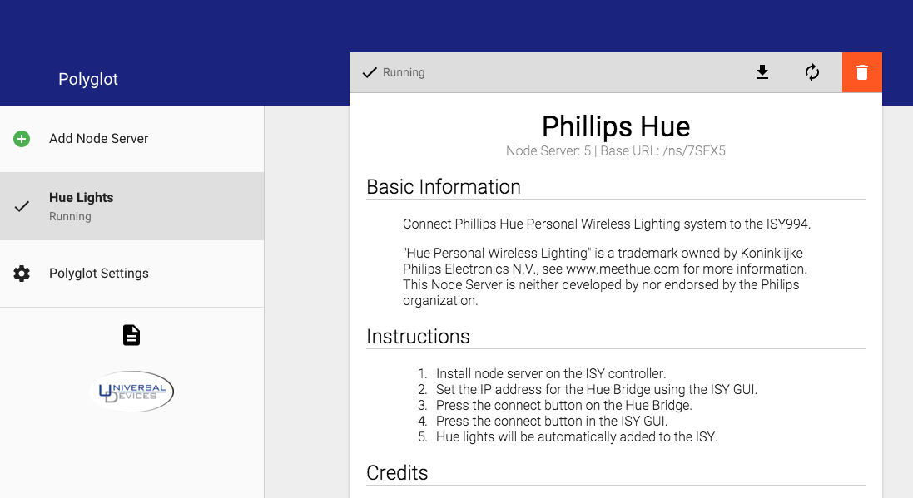

Usage¶
Installation¶
Polyglot is open source software provided under the MIT license. There are two ways to install Polyglot. Either a binary compiled version or the pure python (from source) version.
Version 0.0.4 Released May 30th, 2016
These methods are for linux debian x86 or raspbian on a rpi.
Get the system pre-requisites:
apt-get install python-git python-pip python3-pip libjpeg-dev
Pure Python (aka non-compiled source)¶
Clone the repository to a directory under the user you wish to run Polyglot. This will not run as root. eg. /home/pi/ the following line will create a directory called Polyglot so no need to do that.
git clone https://github.com/UniversalDevicesInc/Polyglot.git
Move yourself into the Polyglot directory
cd Polyglot
Install the Python required modules this does require root as we want to install them globally for Python to access.
sudo pip install -r requirements.txt
Run Polyglot!
python -m polyglot -v
This will launch Polyglot and create a directory titled config in the current directory. Polyglot will store all of its configuration and its log inside of this directory. You may specify a manual path for this directory using the command line flags.
COMPILED version (aka all-in-one)¶
We will need to create a home for Polyglot
mkdir Polyglot && cd $_
We still need the python pre-requisites:
sudo pip install -r https://github.com/UniversalDevicesInc/Polyglot/raw/unstable-release/requirements.txt
Download the polyglot binary for your system. One of these:
For ARM (Raspberry Pi’s) <https://github.com/UniversalDevicesInc/Polyglot/raw/unstable-release/bin/polyglot.linux.armv7l.pyz>
For x86 Linux flavors (Built with Debian sid): <https://github.com/UniversalDevicesInc/Polyglot/raw/unstable-release/bin/polyglot.linux.x86_64.pyz>
For MAC (Built on Yosemite) <https://github.com/UniversalDevicesInc/Polyglot/raw/unstable-release/bin/polyglot.osx.x86_64.pyz>
Make the file executable. Use the filename you downloaded. Example is the ARM version.
chmod 755 polyglot.linux-arm7l.pyz
Run Polyglot!
./polyglot.linux-arm7l.pyz -v
Command line flags¶
-h, --help show this help message and exit
-c CONFIG_DIR, --config CONFIG_DIR
Polyglot configuration directory
-v, --verbose Enable verbose logging
-vv Enable very verbose logging
While running in its default mode, Polyglot will log all warnings and errors. Verbose logging will include info messages. Very verbose mode adds debug messages that could be useful when developing a new node server.
OSX Instructions¶
Install XCODE Developer Tools (enables git) The easiest way to do this is to go to the console and type:
git
This will automatically launch the XCODE installer.
Once XCODE is installed run:
sudo easy_install pip
This installs pip 8.1.1 and now we are ready to get our binary or clone the github repository as instructed above.
Start Polyglot on Boot¶
If you are running the module you already have the polyglot.service file in your Polyglot root folder. If not then get it like so:
wget https://github.com/UniversalDevicesInc/Polyglot/raw/unstable-release/polyglot.service
Edit the file polyglot.service with your favorite editor. Modify WorkingDirectory to be your root Polyglot directory. eg. /home/pi/Polyglot
WorkingDirectory=/home/pi/Polyglot
Modify ExecStart to be how you start it. Full path needed. For pure Python(Non-compiled):
ExecStart=/usr/bin/python -m polyglot -v
For the compiled binary:
ExecStart=/home/pi/Polyglot/polyglot.linux-arm7l.pyz -v
Change the user to the user account that will run polyglot (NOT ROOT)
User=pi
Copy polyglot.service to /lib/systemd/system/ You need sudo as /lib/systemd/system is a system directory.
sudo cp /home/pi/Polyglot/polyglot.service /lib/systemd/system/
Enable systemctl (Make sure polyglot isn’t already running):
sudo systemctl enable polyglot
sudo systemctl start polyglot
Logging locations¶
Log file is found at config/polyglot.log. To watch the live action:
tail -fn 50 /home/pi/Polyglot/config/polyglot.log
User Interface¶
Once Polyglot is running, the user interface may be accessed by opening your favorite browser and navigating to:
http://localhost:8080
The default username and password are both admin.
If you are accessing the frontend from another machine, replace localhost with the IP Address or URL of the machine running Polyglot. If you are having trouble accessing the user interace from a remote machine, check your firewall settings.

The user interface is designed to be simple and intuitive to use. Pictured above is the settings page. Using the menu bar on the left, new node servers can be added and existing node servers may be monitored. The button on the bottom of the menu will open Polyglot’s log in a new browser window.
The user interface is fully compatible with both tablet and mobile devices.
Settings¶
The settings view allows the user to alter settings for Polyglot’s HTTP server as well as Polyglot’s connection to the ISY controller. It is recomended that the username and password are changed from the default. If a new different port is desired, it may be set in the Server Configuration block.
It is also necessary to set the username, password, host name, and port required for connecting to the ISY. These may be configured in the ISY Configuration block.
Adding Node Server¶

To add a node server, navigate to the Add Node Server view using the menu. This view is pictured above.
Populate this form with the details for the new node server. Select a type from all installed types using the drop down. Give the node server any name allows for easy recognition. Finally, populate the Node Server ID field with an ID that is available in the ISY. Press ADD when complete.
The node server will now be available in Polyglot. You may navigate to it using the menu. The node server view in Polyglot will show the Node Server ID, Base URL, and allow for the Profile to be downloaded.
In order to access the node server from the ISY, it must be added to the ISY. To do this, inside of the ISY console, navigate to Node Servers then Configure then the Node Server ID that was set while creating the node server. This will open a dialog that accepts all the information from the node server view. Populate this with the Profile Name and Base URL from the node server view. The User ID, Passsword, Host Name, and Port here must be the values used for connecting to Polyglot. Timeout may be left as 0, and the Isy User should be set to the appropriate user ID that was configured in Polyglot. If you are unsure, use 0.
Click the Upload Profile button and navigate to the zip file obtained from Polyglot’s node server view. Once this has been uploaded, click Ok and restart the ISY controller. Once the ISY has fully rebooted, restart the node server in Polyglot using the node server view.
Managing Node Servers¶
{kind=link}
Clicking a Node Server in the menu will activate the node server view. In this view, there is a menu bar at the top. This menu bar will indicate is the node server is Running or Stopped. It also provides buttons to download the profile, restart the node server, or delete the node server.
Also in this view are instructions for using this node server. Different node servers may have their own instructions on how to use them in the ISY. Any open-source, third party libraries that were used for the development of the node server are also credited here.
If the node server were to crash, a red X will appear next to it in the menu and it will be indicated in the menu bar on the top of the node server view. If this happens, it is best to save the log for debugging and then restart the node server using the button in the menu bar.
Viewing Polyglot Log¶
There is a file icon below all the main menu items. Clicking this icon will open Polyglot’s log in a new browser window. This log file is critical for debugging issues with Polyglot.